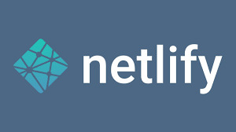
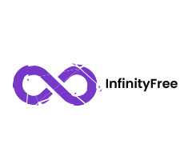

GitHub Page
GitHub Pages es un servicio de hosting estático que permite a los usuarios publicar sitios web directamente desde un repositorio de GitHub. Es particularmente útil para proyectos de código abierto y portafolios personales. Sus características incluyen la capacidad de alojar sitios estáticos, el uso de un subdominio de GitHub (como usuario.github.io) y la integración con Jekyll, un generador de sitios estáticos. Además, permite un control de versiones robusto gracias a su integración con Git.
Entre sus ventajas, GitHub Pages ofrece un servicio completamente gratuito para proyectos personales, lo que lo hace accesible para desarrolladores y estudiantes. Además, el uso de Git facilita la gestión de cambios y la colaboración en equipo, especialmente en proyectos de código abierto. Sin embargo, tiene algunas desventajas, como la limitación en el contenido dinámico, ya que no soporta backend o bases de datos, y requiere conocimientos técnicos, lo que puede ser un obstáculo para principiantes.

Netlify
Netlify es una plataforma que permite el hosting tanto de sitios estáticos como dinámicos, ofreciendo una experiencia de despliegue simplificada. Proporciona un subdominio gratuito (ejemplo: ejemplo.netlify.app) y permite la configuración de dominios personalizados. Sus características incluyen la integración continua con repositorios de GitHub, GitLab y Bitbucket, así como funciones avanzadas como deploys automáticos y soporte para funciones serverless, además de una red de entrega de contenido (CDN).
Las ventajas de Netlify radican en su fácil proceso de despliegue y la flexibilidad que ofrece para proyectos más complejos. También proporciona certificados SSL gratuitos automáticamente, lo que mejora la seguridad de los sitios web. Sin embargo, su plan gratuito tiene limitaciones en el ancho de banda y el uso de funciones serverless, y algunas de sus características más avanzadas pueden ser complicadas para usuarios sin experiencia técnica.

InfinityFree
InfinityFree es un servicio de hosting compartido que proporciona una opción completamente gratuita para alojar sitios web. Ofrece subdominios (como ejemplo.epizy.com) y permite el uso de dominios personalizados. Sus características incluyen soporte para PHP y MySQL, lo que lo hace adecuado para aplicaciones web dinámicas, y un panel de control tipo cPanel para la gestión de archivos y bases de datos.
Entre sus ventajas, InfinityFree destaca por ofrecer almacenamiento y ancho de banda ilimitados, lo que lo convierte en una opción atractiva para aquellos que buscan libertad en el uso de recursos. Además, no incluye publicidad en los sitios alojados, lo que permite una experiencia más profesional. Sin embargo, presenta desventajas como un soporte técnico limitado en comparación con servicios pagos y un rendimiento variable, que puede resultar en tiempos de inactividad.
Wix
Wix es una plataforma de creación de sitios web que ofrece un servicio de hosting gratuito, ideal para usuarios sin conocimientos técnicos. Su interfaz de arrastrar y soltar permite a los usuarios diseñar fácilmente páginas web utilizando un subdominio de Wix (ejemplo: ejemplo.wixsite.com). Ofrece una amplia variedad de plantillas personalizables y herramientas integradas de SEO y marketing.
Las ventajas de Wix incluyen su facilidad de uso, que lo hace accesible para principiantes, y la variedad de plantillas atractivas que se pueden personalizar para diferentes tipos de proyectos. Sin embargo, su plan gratuito tiene limitaciones en almacenamiento y ancho de banda, y los sitios web gratuitos incluyen anuncios de Wix, lo que puede afectar la percepción profesional del sitio.